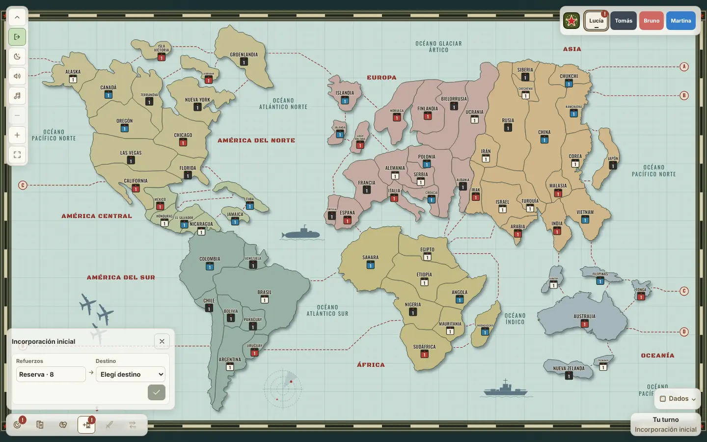

Reconquista
La modalidad más grande: 72 países en siete continentes, una carta de situación nueva en cada ronda, misiles, alianzas para atacar juntos y países compartidos. Se juega de 2 a 6 personas, con o sin bots.

La base es la del Clásico: incorporar, atacar con dados, reagrupar, pedir cartas y canjearlas. Esta página explica lo que cambia.
El tablero
| Continente | Países | Ejércitos extra |
|---|---|---|
| América del Norte | 12 | 6 |
| América Central | 6 | 3 |
| América del Sur | 8 | 4 |
| Europa | 16 | 8 |
| Asia | 16 | 8 |
| África | 8 | 4 |
| Oceanía | 6 | 3 |
Hay 16 islas, que cuentan para algunos objetivos. Un país puede tener dos dueños a la vez: eso es un condominio.
Preparación
- Los países se reparten al azar, con un ejército en cada uno. Los que sobran se asignan con dados.
- Colocación inicial: dos vueltas, de 8 y de 4 ejércitos. Con dos jugadores es una sola vuelta de 18.
- Se revela la primera carta de situación. Si es Refuerzos extra, todos colocan ese extra antes de seguir.
- Primera hostilidad: cada jugador juega un turno solo de ataque, sin misiles.
Después empiezan los turnos completos.
Rondas y situaciones
Cada ronda empieza con una carta de situación, que vale para toda la ronda. Después todos incorporan por turno, y luego todos juegan su turno de ataque.
| Situación | Efecto |
|---|---|
| Combate clásico | La ronda se juega con las reglas normales. |
| Nieve | El defensor suma un dado, hasta un máximo de 4. |
| Viento a favor | El atacante suma un dado, hasta un máximo de 4. |
| Crisis | Cada jugador tira un dado. Quien saca menos no recibe carta en esta ronda. |
| Refuerzos extra | Antes de la incorporación, cada jugador coloca la mitad de sus países en ejércitos extra. |
| Fronteras abiertas | Solo se ataca entre países de continentes distintos. |
| Fronteras cerradas | Solo se ataca entre países del mismo continente. |
| Descansa un color | Ese color no puede atacar ni reagrupar en esta ronda. |
Para ver la situación de la ronda tocá su indicador o usá la tecla S.
Incorporación y bloqueo
Recibís la mitad de tus países (como mínimo 4) y los extras de cada continente donde estás en todos los países, aunque sea compartiendo alguno.
Un país rodeado por un mismo rival queda bloqueado: pasa cuando tiene al menos 3 limítrofes y todos son de ese rival, con 2 ejércitos o más cada uno. Un país bloqueado no recibe ejércitos ni reagrupamientos. Si es tu último país, no cuenta como bloqueado.
Ataque
Los dados funcionan como en el Clásico, con un agregado: si tenés al menos el doble de ejércitos que el defensor y él tiene 3 o más, tirás 4 dados. Al conquistar un país te quedás con los misiles que había.
Misiles
- En la incorporación podés convertir 6 ejércitos en 1 misil. En el país tiene que quedar al menos un ejército.
- Un misil alcanza países a 1, 2 o 3 pasos de distancia, contando el camino más corto. Quita 3, 2 o 1 ejércitos según la distancia.
- Para disparar necesitás más misiles en tu país que los que tiene el defensor en el suyo.
- Un misil nunca deja un país vacío: el defensor tiene que tener más ejércitos que el daño.
- Los misiles se pueden reagrupar como los ejércitos.
- No hay misiles en la preparación ni en la primera hostilidad.
Con la tecla M abrís el disparo de misil.
Cartas y canjes
Al final del turno recibís una carta si conquistaste un país, o dos países si ya hiciste tres canjes. También alcanza con dos conquistas hechas atacando junto a un aliado. Podés tener hasta 5 cartas.
- Si el país de una carta que sacaste es tuyo, podés cobrar 3 ejércitos en él. Las cartas heredadas no dan este bono.
- Los símbolos son avión, barco y tanque. El soldado y el comodín valen cualquier símbolo. La supertarjeta se canjea sola.
- Si controlás un continente entero sin compartir ningún país, podés tomar su carta de continente. Asia, Europa y América del Norte se canjean solas, y las demás valen como uno o dos símbolos. La perdés si perdés el continente, y cada jugador puede usar cada carta de continente una sola vez.
- Hacés como máximo un canje por ronda, en la incorporación o al cerrar tu turno.
| Canje | 1.º | 2.º | 3.º | 4.º | Siguientes |
|---|---|---|---|---|---|
| Ejércitos | 6 | 10 | 15 | 20 | 5 más cada vez |
Pactos
Los pactos se proponen desde el panel Pactos y empiezan cuando el otro los acepta. El juego impide los ataques y los disparos que un pacto prohíbe.
| Pacto | Qué protege |
|---|---|
| Entre países | Un país de cada uno, a 3 pasos o menos. No se atacan entre ellos y ningún misil cruza el camino que los une. |
| Dentro de un continente | No se atacan dentro de un continente donde están los dos. |
| Entre fronteras | No se atacan entre dos continentes donde tienen países limítrofes. |
| Mundial | No se atacan en ningún lado. |
| Zona internacional | Un país tuyo con un ejército y sin misiles, limítrofe a los dos. Los dos tienen que haber hecho su tercer canje. |
En una zona internacional los dos se van pasando el país. Si en tu turno podías conquistarla y no lo hiciste, o la dejaste con más de un ejército, perdés una carta al azar y tu socio decide si la zona sigue. Cada jugador puede tener una sola zona.
Para salir de un pacto, lo rompés: sigue vigente hasta que el otro jugador termine un turno más.
Atacar juntos
Dos jugadores pueden aliarse para atacar el país de un tercero. Cada uno elige un país propio limítrofe al objetivo, con al menos 2 ejércitos. El otro la acepta, quien la propuso la inicia en su turno de ataque, y los dos van tirando los dados por turnos.
Si lo conquistan, entran los dos, con hasta 2 ejércitos cada uno, y el país queda como condominio. Hasta el turno del aliado en la ronda siguiente, los países de origen de los dos quedan protegidos entre sí.
Condominios
Un condominio es un país con dos dueños. Los dos socios no pueden atacarse dentro de él, y cada uno cuenta el país como propio.
- Para atacar un condominio con dados, primero tenés que atacar al ocupante con más ejércitos.
- Si expulsás a uno de los dos, podés ofrecerle un condominio al que queda. Si no acepta, podés seguir atacándolo desde adentro o retirarte y dejarle el país.
Objetivos y victoria
El objetivo común es controlar 45 países. Además, cada jugador tiene un objetivo secreto de ocupación o de destrucción.
- Con 2 jugadores, cada uno tiene dos objetivos secretos y debe cumplir los dos.
- Con 3 jugadores, los objetivos de ocupación piden además 10 países aparte de los del objetivo.
- Con 2 o 3 jugadores no hay objetivos de destrucción ni el de 35 países.
- Si tu objetivo es destruir a alguien y otro lo elimina primero, pasás a necesitar 45 países.
Reconquista Express
Con la duración Express, la partida dura 40 minutos con 2 o 3 jugadores, 60 con 4 y 80 con 5 o 6. Después se juegan dos rondas finales. Los turnos de preparación duran 2 minutos, los turnos completos 3 y los de las rondas finales 4.
Si se termina el tiempo, gana quien tenga más países, con el mismo desempate que el Clásico: ejércitos, canjes y cartas. Si alguien se desconecta, la partida lo espera 5 minutos y después un bot puede jugar por él.